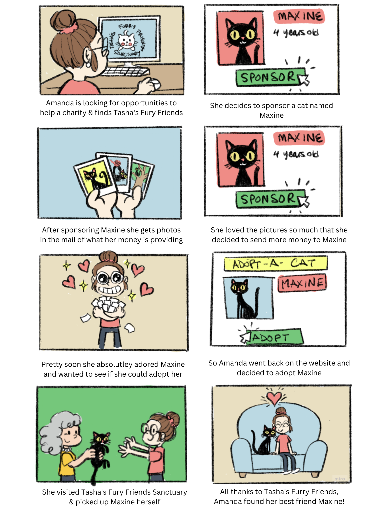
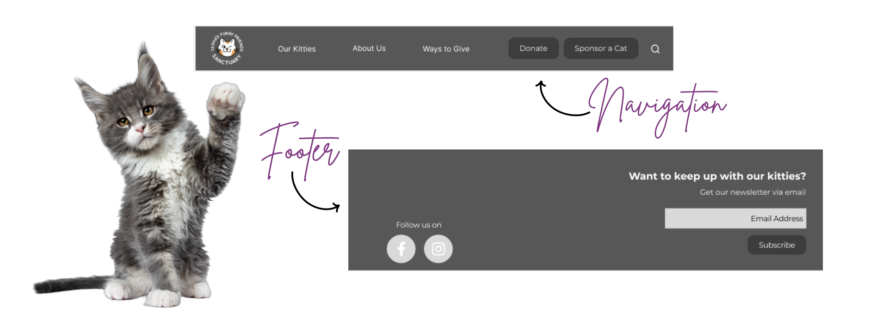
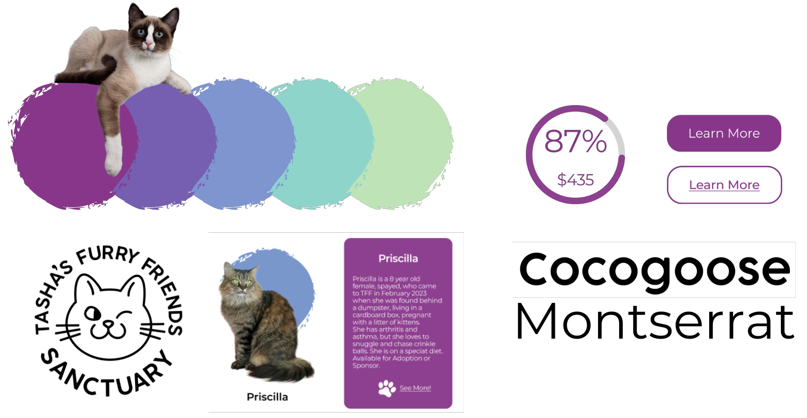
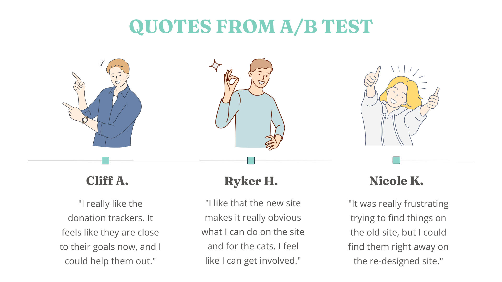
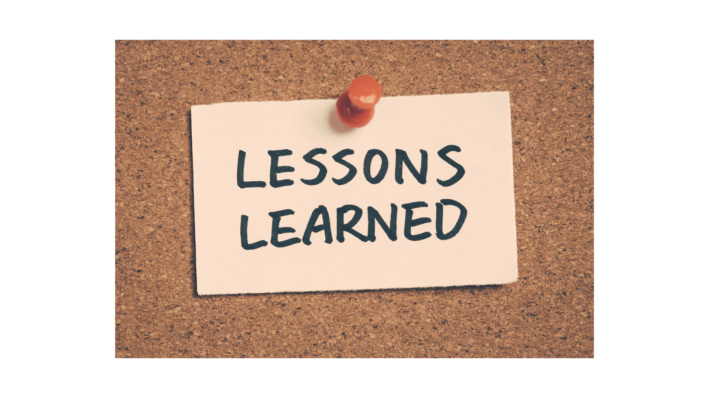

Storyboard
The data gathered from our research was used to create a storyboard.
This tool is an visual expression of the experience our new website will provide users.
The narration provides context of how the site will be able to not only maximize reoccurring donations, but also increase the number of cat adoptions.
It was important to highlight how we could pull customers into reoccurring donations in a way that is quick to understand, and easy to remember.
The storyboard was often revisited during the design process, providing a reflection point to the main purpose as many iterations are made.
Initial Wireframes
Based on the problems identified above, initial product solutions where drafted into lo-fi wireframes in Figma, with a focus on addressing the main pain points.
Next, the wireframes were slightly enhanced with some basic imagery and text, and shared within our design team for feedback.
During the iteration phase the pages were refined by sampling several different placements of the elements, adjusting the size of various components, and adding and removing features based on the collective opinion.


Style Guide
After we concluded the iterations, our team sat down and constructed a formal style guide to make sure we could maintain a cohesive look throughout all pages and functions during the building process.
For our style guide we wanted to pull in some color psychology and use colors that would tie to our cause. We landed on the color purple, because it combines the “compassion” element of the color blue with the “Taking Action” element of the color red -and this is what we were looking for – people to feel compassion for our cats, and then take action to help them.
We also found some nice, simple easy to read fonts, updated our logo, and again really focused on pictures to tell our story.
Mobile Version
It is crucial to create an adaptable mobile version of a website in today's digital landscape, as more and more people are accessing websites from mobile devices. Doing a separate build out for mobile devices optimizes the user experience, makes the site easy to navigate, and helps the content to load faster. Separate mobile development also increases SEO, as google and other search engines prioritize mobile friendly websites in their search results.
In this case we were able to use smaller images, shorten text, add a mobile friendly navigation, and utilize carousels - which allow users to swipe through options rather than having to scroll excessively.

A/B Testing
After fully developing the prototype, an A/B test was conducted to determine which site was more effective in achieving users goals.
The results of the test determined that all users found the preferred the new version of the website.
The A/B test allowed us to confidently conclude the redesign a success. Implementation of the updated design will lead to improved user experience, higher conversion rates, and ultimately, better outcomes for the cats.
Next steps
In the following stages, additional landing pages can be built out, the non-profit would like to implement monthly news letters, and donation specific details would be added to highlight the monthly donation amounts.
Further down the line, the site would like to provide live stream access to the cats, get corporate sponsorship matches, and participate in email push's to raise funds.
Conclusion
This redesign was a fun project for a good cause. I expanded my skill set as a research and a designer. The most important things I learned are:
- User Research is the Best Tool:. Truly understanding who your users are, what they need, and how they behave will result in happy customers and clients.
- Focus on Being User Centered: The goal should always be to create a user-centered design that makes reaching goals simple and enjoyable.
- Keep it Simple: An easy and intuitive site with clear navigation, logical structure, and smooth user flows gets the best result.
- Iterate, Test & Iterate More: A website redesign can't be nailed in one take, to make it successful you must appreciate the ongoing process of testing and iteration.
- The Sponsor a Cat Landing Page
- Collaboration for the Win: A website redesign requires teamwork between all parties involved. Regular communication keeps us aligned on the project goals and vision.

Thank you for reading my case study!
Want to work with me? Feel free to contact me!
...or just say hello on LinkedIn.